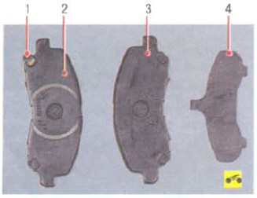
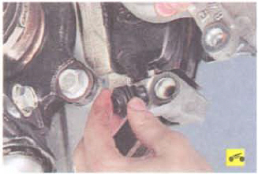

Проверяйте состояние тормозных колодок при каждом техническом обслуживании (см. «Проверка степени износа тормозных колодок, дисков и барабанов»).
Тормозные колодки необходимо заменять при износе накладок (минимально допустимая толщина фрикционных накладок -2,0 мм), при непрочном соединении накладок с основанием, замасливании рабочих поверхностей, наличии глубоких борозд или сколов.
Примечание: На внутренних колодках передних тормозов установлены индикаторы износа. По достижении минимально допустимой толщины накладок индикатор износа во время торможения соприкасается с тормозным диском, вызывая скрип, сигнализирующий о наступлении предельного износа накладок тормозных колодок.
Предупреждения: Заменяйте тормозные колодки передних тормозных механизмов только комплектом из 4 шт. (по две на каждую сторону).
Перед заменой тормозных колодок проверьте уровень тормозной жидкости в бачке главного тормозного цилиндра. Если уровень близок к верхней метке, необходимо откачать часть жидкости, так как после замены изношенных колодок новыми уровень поднимется.
Вам потребуется ключ «на 14».
1. Снимите левое переднее колесо.
2. Выверните нижний направляющий палец суппорта...
3. ...и извлеките палец из направляющей тормозных колодок.
4. Поднимите суппорт вверх.
5. Снимите с направляющей внутреннюю...
6. ...и наружную тормозные колодки.
 Так выглядят тормозные колодки переднего тормозного механизма:
1-индикатор износа тормозной колодки;
2 - внутренняя тормозная колодка;
3 - наружная тормозная колодка;
4 - накладка наружной тормозной колодки.
7. Снимите с направляющей колодок две фиксирующие пружины.
 При каждой замене тормозных колодок в обязательном порядке проверьте состояние резиновых защитных чехлов направляющих пальцев и перемещение суппорта относительно направляющей тормозных колодок. Если перемещение затруднено, смажьте консистентной смазкой направляющие пальцы суппорта.
8. Установите фиксирующие пружины, тормозные колодки в направляющие и остальные детали в порядке, обратном снятию. Для исключения самоотворачивания направляющего пальца суппорта смажьте перед установкой его резьбу анаэробным фиксатором резьбы.
9. Аналогично замените тормозные колодки тормозного механизма правого колеса.
10. Проверьте и при необходимости восстановите уровень тормозной жидкости в бачке главного тормозного цилиндра.
Заменив изношенные тормозные колодки новыми, не спешите сразу выезжать на оживленные магистрали. Не исключено, что при первом же интенсивном торможении вы будете неприятно поражены низкой эффективностью тормозов, несмотря на то что установлены фирменные колодки. Тормозные диски тоже изнашиваются, и новые колодки касаются их только краями, практически не тормозя. Выберите тихую улочку или проезд без автомобилей и несколько раз плавно затормозите, чтобы колодки притерлись и стали прилегать всей поверхностью. Заодно оцените и эффективность тормозов.
Старайтесь не тормозить резко хотя бы первые 100 км. При сильном нагреве неприработавшихся колодок верхний слой их накладок подгорает и тормоза еще долго не будут максимально эффективны.